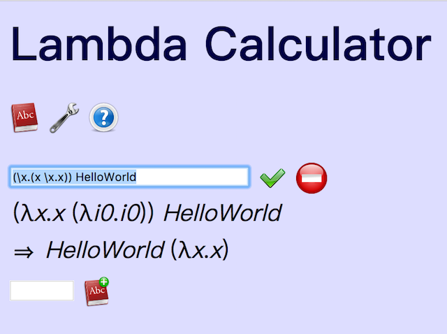

面向眼科医生的λ演算入门教程(3)
变量的区别
上回说到lambda calculus其实只有一种操作，就是字符替换。但是具体怎么替换还是有些讲究的。
有时候数学书难读是因为数学书的作者往往是数学家，作者知道的太多了，以至于不知道读者不知道，于是从读者的角度来说就凭空引入了一些概念。所以，我们还是从数学中熟悉的中学数学区域出发好了。
比如，一元二次函数： $$ f(x)=ax^2+bx+c $$ 这里面的变量是x，老师问$$f(2)=？$$那么就是把$$x=2$$代入到$$f(x)$$中， $$ f(2)=a 2^2+b 2+c=4a+2b+c $$ 那a,b,c是什么呢？老师没给，所以我们就当作a,b,c各自是3个数好了。如果老师给出a=1,b=2,c=3，那么这时候 $$ f(x)=x^2+2x+3 \ f(2)=4+4+3=11 $$ 看起来对a,b,c操作和刚才对于x做的操作也类似啊，如果有数就代入进去，没有的话就留着。
在$$ f(x)=ax^2+bx+c $$中，x，写在了$$ f(x)$$ 的括号里面，这个x可以叫做metavariable，在函数的定义式子里面已经明确告诉你，函数定义里面的x如何变化要去看metavariable到底是什么，所以$$ ax^2+bx+c $$式子里的x叫做bound variables，是约束变量，是被bound到metavariable上的。
而对于式子中的a,b,c，并不在这个函数内部定义，是在函数外部定义的，比如题目中写的，或者老师写在了黑板上，abc也是可变的，但怎么变这个函数定义式没说，是自由的，所以叫做自由变量free variables。所有没有bound到metavariables上的变量都是free的。
正是由于$$ f(x)=ax^2+bx+c $$中的a,b,c可以free取各种特殊的数值，中学数学才有那么多题目可以出。比如a,b,c之中有个0啦，a和0之间的关系，b和0之间的关系，a和b之间的关系……
如果要对$$ f(x)=ax^2+bx+c$$ 中的x进行替换，那么是对bound variables进行替换，也就是找到其中的x，而不是其中的a,b,c这样的free variables。
实际上$$f(x)$$这个写法，声明了两件事情：
- f是这个函数的名字
- 括号里面的x是metavariable，
如果是$$g(a,b,c)=ax^2+bx+c$$那么就是另外一个函数了，里面的bound variables是a,b,c，而x反而变成了free variable.
更复杂一点，如果函数中有嵌套，比如
$$L(x, f(x))$$，现在求x=2时的值，也是把x代入，$$L(2, f(2))$$
lambda calculus中
对于lambda calculus，书写的时候和二次函数一样，会明确标记出谁是metavariable。
与f(x)不同，λx.只声明了一件事情，λ和点. 之间的x是metavariables。
在点.后面的是函数的定义表达式，如果变量跟metavariables是绑定的，就是bound variable。
比如：
(λx.x) HelloWorld
相当于$$f(x)=x$$，求x=HelloWorld，就是将x替换成HelloWorld
λx.中间是metavariable x，λx.后面是函数定义的表达式x，这里面只有一个变量x，与metavariable是相同的，是bound variable。用Hello替换掉bound variable。

我们看$$L(x, f(x))$$那个例子，如果求x=2时，是把2替换掉x，得到$$L(2, f(2))$$
类似的，我们可以写另一个。
打开http://www.cburch.com/lambda/ 试一试，输入：
(λx.(x (λy.x)) HelloWorld
类比$$L(x, f(x))$$那个例子，$$x (λy.x)$$中，第一个x显然是bound variable，要被替换成HelloWorld，第二个x，虽然在λy.x内部，但是λy.x中的metavariable定义的是y，而不是x，所以x是free的，它的值要从λy.x外面找，所以还是HelloWorld.
更复杂一点，如果
(λx.(x (λx.x))) HelloWorld
就不一样了，(x (λx.x))之中，第一个x是bound variable，要被替换成HelloWorld，内部嵌套的那个λx.x中，由于声明了x是这个函数体内的bound variable，那么这里面的x值就不是HelloWorld了。
我很喜欢 http://www.cburch.com/lambda/ 这个lambda calculus interpreter的原因之一是，它会自动做变量的重新解释，(x (λx.x))之中λx.x的x与外部的x是无关的，所以干脆可以写成其他的名字，比如i0，在不容易混淆的时候再换回成x就好了。

(λx.x (λi0.i0)) HelloWorld ⇒ HelloWorld (λx.x)
我们再看Hello World中的第二个例子，就可以更清楚地理解了。
(λx.λy.x) Hello World

λx.(λy.x)中，定义x是bound variable，在λy.x中，y是metavariable，x是free variable，x的值在λy.x的上一层定义，所以当Hello传入时，送到了λy.x中的x里面。
(λx.λy.x) Hello World
⇒ (λy.Hello) World
所以，到目前为止，
-
你已经知道variables有三种：
-
metavariable是写在λ和点.之间的那个
- 函数表达式里和metavariable绑定的那个是bound variable
-
函数表达式里没有被绑住，可以自由变来变去的那些都是free variables.
-
你也知道替换的规则是什么了：
-
应该替换掉的是bound variables，如果一个变量是free variables就要去它的上一层找值。
附变量符号的小历史
中国古代也有类似的标记方法，会把bound variables叫做元，比如天元、地元、人元，分别是3个bound variables，x,y,z。
北宋平阳蒋周创立了天元的概念，李冶（1192－1279）发展了天元术。
"李冶在东平获得刘汝谐撰《如积释锁》，书中用十九个单字表示未知数的各个 $$ x^9至 x^{-9} $$的幂：
仙、明、霄、汉、垒、层、高、上、天、人、地、下、低、减、落、逝、泉、暗、鬼；其中立天元在上。"
我还不太确定其中的仙……鬼是指系数还是指$$ax^9$$这样合起来的一项。如果是后者，可能还没有区分free variables。 https://zh.wikipedia.org/wiki/天元术
弗朗索瓦·韦达François Viète（1540－1603） 则是在欧洲首先使用符号来标记bound variables和free variables，而且是作出了区分 https://zh.wikipedia.org/wiki/弗朗索瓦·韦达
在我看来，将未知数和符号引入数学，是不亚于仓颉造字的大事，从此数学摆脱了实体世界的束缚。（回忆一下你在小学还经常可以看到取水放水的小明，到中学他就已经渐渐远去了。）
造字尚且使“鬼夜哭”，符号的引入则令“神始惧”。
注释
Comments powered by Disqus